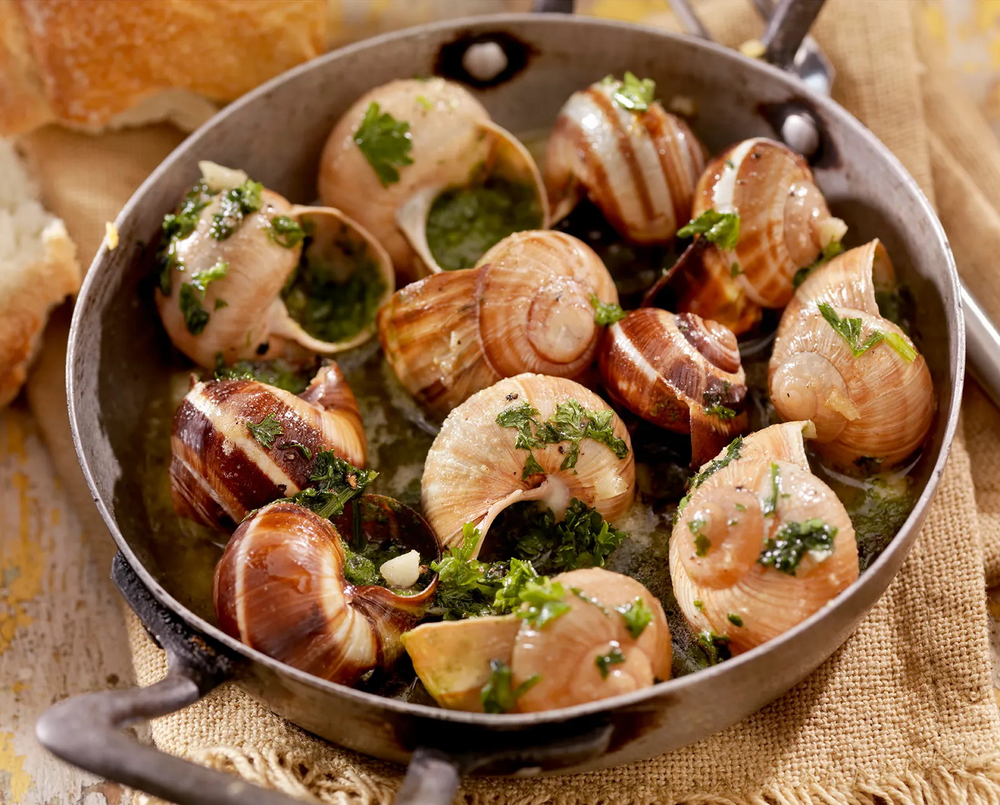

Escargot is a quintessential French delicacy featuring snails baked in a rich garlic-herb butter. This elegant appetizer is surprisingly simple to prepare and offers a wonderful introduction to French cuisine. The snails serve as a vehicle for the delicious butter sauce, which is perfect for sopping up with crusty French bread.
Ingredients
- 24 canned snails, drained and rinsed
- 8 tablespoons unsalted butter, softened
- 4 cloves garlic, minced
- 2 tablespoons fresh parsley, finely chopped
- 1 tablespoon shallot, finely minced
- 1 teaspoon fresh lemon juice
- 1/4 teaspoon sea salt
- Pinch of freshly ground black pepper
- Pinch of nutmeg
- 1 baguette, sliced, for serving
Preparation
This classic French appetizer is all about the garlic-herb butter, which transforms simple snails into a luxurious delicacy. The dish is traditionally served in special escargot dishes, but can also be prepared in a regular baking dish.
Chef's Tips
- If you don't have escargot dishes, you can use a small baking dish or ramekins.
- Make the garlic-herb butter ahead of time for more developed flavors.
- Serve with small forks or picks to extract the snails from their shells.
- A crusty baguette is essential for soaking up the delicious butter.